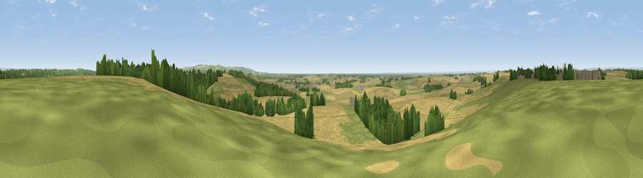

Viewpoint near Bulmer
#11871 in England · top 19% of its area beats it · near BulmerThe view, rendered

A 360° render of this exact spot computed from the terrain model, tree cover and land cover — summer colours, afternoon light, calibrated against photographs of famous viewpoints. Real trees, hedges and buildings will differ in detail.
The panorama
Grey silhouette: terrain skyline in each direction (720 bearings, Earth curvature and refraction included). Dashed green: skyline with trees (+15 m) and buildings (+8 m) as obstacles. Blue strip: how far the ground is visible on each bearing.
Where the view opens
Wedge length = distance to the farthest visible ground on that bearing (vegetation-aware). Rings at 10, 25 and 50 km.
What fills the view
55% cropland · 29% grassland · 15% woodland ·
Angular shares of the visible panorama (visual magnitude), not map area. Landscape diversity 0.44 (0–1 Shannon).
Key numbers
More beautiful places nearby
The staircase of upgrades: each row has a higher view potential than everything closer. Driving times are estimates from straight-line distance, calibrated against real road routing — check an actual route before setting out.
| Place | Direction | Drive | Score |
|---|---|---|---|
| Viewpoint near Terrington | WNW · 4 km | ~8 min | 65.8 |
| Viewpoint near Terrington | NW · 6 km | ~13 min | 70.4 |
| Viewpoint near Leavening | ESE · 10 km | ~19 min | 73.7 |
| Viewpoint near Acklam | SE · 11 km | ~22 min | 73.8 |
| Viewpoint near Ampleforth | NW · 16 km | ~28 min | 76.6 |
| Viewpoint near Kilburn | NW · 24 km | ~39 min | 79.3 |
| Hood Hill | NW · 25 km | ~40 min | 79.6 |
| Viewpoint near Thirlby | NW · 26 km | ~41 min | 81.5 |
54.09565, -0.92313 · source: screening · position refined by local search. Computed location — check access rights before visiting.